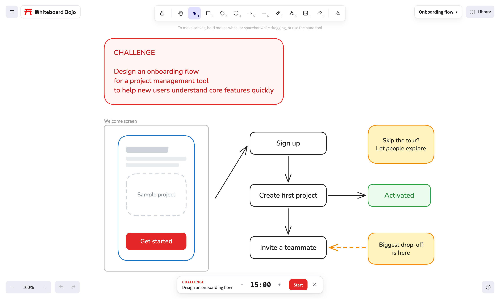

Quadro branco online grátis, sem cadastro
Comece a desenhar agora. Seu quadro é salvo automaticamente.
Abrir o quadro branco
O que você pode fazer
- Tela infinita. Espaço sem limites para ideias, mapas mentais e diagramas.
- Formas e setas conectadas. As setas acompanham as formas quando você as move, ótimo para fluxogramas.
- Frames. Organize telas de um wireframe ou partes de uma apresentação.
- Texto, imagens e caneta. Escreva, cole capturas de tela e desenhe à mão livre.
- Modo escuro e exportação. Exporte em PNG ou SVG, ou salve o arquivo do quadro.
Como funciona
- Abra o quadro branco. Não precisa de conta.
- Escolha uma ferramenta na barra superior, ou use os números de 1 a 9 no teclado.
- Desenhe. Tudo é salvo no seu navegador enquanto você trabalha, e você pode criar quantos quadros quiser.
Privado por padrão
Seus quadros nunca saem do seu dispositivo. Não há servidor guardando seus desenhos, então ninguém além de você tem acesso a eles. Para fazer backup ou levar um quadro para outro computador, use Save to… no menu e depois Import board no outro dispositivo.
Para praticar design
O Whiteboard Dojo também tem 150 desafios de design para treinar para entrevistas de UX e produto, com cronômetro. Os desafios estão em inglês: abrir o gerador de desafios.
Perguntas frequentes
Preciso criar uma conta?
Não. Não tem login, cadastro nem e-mail. É só abrir o quadro e começar a desenhar.
É grátis mesmo?
Sim. Não existe plano pago, período de teste nem limite de quadros.
Onde meus quadros ficam salvos?
No seu próprio navegador, automaticamente, enquanto você desenha. Nada é enviado para um servidor, então seus quadros continuam privados.
Posso compartilhar um quadro?
Sim. Exporte como imagem PNG ou SVG para mostrar, ou salve como arquivo para outra pessoa importar e editar.
Funciona no celular?
Funciona em qualquer navegador moderno, no computador, tablet ou celular, sem instalar nada.
O quadro está em português?
A página do quadro está em inglês por enquanto, mas as ferramentas são visuais e fáceis de usar: formas, setas, texto, imagens e caneta.
Pronto para começar? É grátis e não precisa de cadastro.
Abrir o quadro branco